Présentation
Ce mod modifie le jeu Baldur's Gate II : Trône de Bhaal de façon à ce qu'il dispose d'animations supplémentaires de créatures et de personnages (appelées « slots d'animation » dans ce document [NdT : « emplacements » ou « index »]). Il fournit aussi un utilitaire permettant de définir automatiquement de nouveaux slots d'animation afin de les enregistrer dans le forum d'Infinity Animations. Il fonctionne ainsi comme une base de données centralisée, utilisable par quiconque souhaite ajouter de nouvelles animations de créature dans le jeu sans être confronté à des problèmes de conflits et d'incompatibilité avec d'autres mods.
Infinity Animations prend en charge les types d'animation très divers des jeux Baldur's Gate I, Baldur's Gate II, Icewind Dale I, Icewind Dale II, Planescape: Torment et Neverwinter Nights. En bonus, le mod rétablit l'intégralité des animations de personnages de Baldur's Gate I, et permet à certaines animations qui n'en avaient pas jusqu'à présent de disposer dorénavant d'un paperdoll [NdT : silhouette dans l'écran des personnages].
Point important pour les joueurs installant plusieurs mods conséquents (appelés « megamods »), Infinity Animations résout les conflits de slots d'animation [NdT : plusieurs mods utilisant les mêmes slots pour des animations différentes, le dernier installé écrase les modifications effectuées par les précédents] et rétablit les animations de base que les megamods ont modifiées.
Enfin, il comporte des composants optionnels qui introduisent de nombreuses nouvelles animations dans le jeu, ainsi que leurs jeux de sons associés (soundsets). Bien que le nombre d'animations supportées ne soit pas « infini », comme le nom du mod l'indique, il devrait toutefois être assez important pour répondre aux besoins actuels (et probablement futurs) de tout le monde.
Principales fonctions
- Rétablit les animations de personnages de Baldur's Gate I.
- Améliore la prise en charge des paperdolls pour les animations existantes.
- Ajoute des animations de jeu personnalisées pour les personnages et les créatures (dont les dragons).
- Permet d'utiliser de nombreux types d'animation (dont certains n'ont jamais été vus dans les jeux).
- Résout les problèmes d'empilement d'animations et les conflits de slots, de désignation et de jeux de sons des animations de créature.
- Harmonise les noms des animations dans tous les jeux pour éviter les conflits avec les jeux EE. Pour plus de détails, veuillez consulter la table de références des animations.
- À partir de la version 6.0.0, installe automatiquement les fichiers son des créatures dans la langue du jeu.
- Fournit un utilitaire GUI [NdT : interface graphique] pour vous aider à ajouter de nouvelles animations dans le jeu.
- Vous permet de visualiser à quel point le pourcentage de slots d'animation disponibles refuse obstinément de diminuer. 🙂
Si vous souhaitez plus d'informations sur la manière d'ajouter de nouvelles animations, veuillez consulter le chapitre Ajouter un slot d'animation de la documentation de l'utilitaire IA Reference Picker.
•HAUT DE PAGE
Compatibilité
Jeux concernés
Infinity Animations est conçu pour fonctionner sur la plupart des jeux Infinity Engine, ce qui inclut :
- La série des Éditions Améliorées (Enhanced Editions) publiées par Beamdog, Baldur's Gate: Enhanced Edition (BGEE), Baldur's Gate II: Enhanced Edition (BG2EE), Icewind Dale: Enhanced Edition (IWDEE), ainsi que l'extension de BGEE, Siege of Dragonspear (SoD). Toutes les Éditions Améliorées comprennent leurs extensions originales (ainsi, IWDEE comprend Heart of Winter - HoW - et Trials of the Luremaster - TotLM).
- Le jeu original Baldur's Gate II avec son extension Trône de Bhaal (Throne of Bhaal : ToB). Assurez-vous que vous avez bien installé le patch 26498 pour le Trône de Bhaal. Si nécessaire, vérifiez le fichier Readme relatif au patch dans votre répertoire de jeu et sur le site internet de BioWare.
- Les mods de conversion basés sur ToB : Baldur's Gate Trilogy (BGT), Baldur's Gate Tutu (et EasyTutu) et Enhanced Edition Trilogy (EET).
Compatibilité avec les autres mods
Ce mod est un mod WeiDU et devrait par conséquent être compatible avec n'importe quel mod WeiDU. Bien que nous nous efforcions de rendre Infinity Animations compatible avec le plus grand nombre possible de mods, des incompatibilités risquent toujours de se produire. Voici la liste de celles recensées jusqu'à présent :
Si vous rencontrez des bugs, veuillez les signaler dans le forum, s'il vous plaît.
Ordre d'installation
➽ Bien qu'il ne soit pas requis pour faire correctement tourner Infinity Animations, nous recommandons fortement aux joueurs de ToB original de télécharger et d'installer la dernière version du BG2 Fixpack avant d'installer ce mod.
Dans un monde parfait, Infinity Animations devrait être installé comme un fixpack qui fonctionnerait comme une base de données centralisée, utilisable par quiconque souhaite ajouter de nouvelles animations de créature dans le jeu sans être confronté à des problèmes de conflits et d'incompatibilité avec d'autres mods. Malheureusement, comme il a été conçu après la première génération de megamods qui écrasaient les fichiers du jeu, notamment pour résoudre les conflits de slots d'animation et rétablir les animations de base que les megamods avaient modifiées, il doit être installé après ces megamods, au moins jusqu'à ce que leurs auteurs les mettent à jour pour tirer parti de toutes les possibilités offertes par Infinity Animations... 🙁
En attendant ce jour merveilleux, voici l'ordre d'installation conseillé :
- Veuillez installer Infinity Animations après ToBEx, BG2 Fixpack, EET et la plupart des mods qui ajoutent des créatures ou des animations.
- Veuillez installer Infinity Animations avant 1PP, EET_end et les procédures finales de « biffing » [NdT : archivage avec Generalized biffing].
☛ ⚠️ Les moddeurs souhaitant rendre leurs mods compatibles avec Infinity Animations sont fortement invités à lire le document IA Note for modders qui les guidera à travers toutes les étapes nécessaires.
Commencez une nouvelle partie après avoir installé ce mod, ou si vous êtes réticent(e), installez le composant « Correction des animations dans les parties sauvegardées ».
•HAUT DE PAGE
Installation
Mise en garde
Si une ancienne version de ce mod est déjà installée, il est nécessaire de la désinstaller d'abord. Pour cela, lancez setup-infinityanimations.exe et désinstallez tous les composants précédemment installés. Une fois la désinstallation achevée, supprimez le répertoire 📁 infinityanimations et le fichier setup-infinityanimations.exe avant d'extraire la nouvelle version du mod.
Lorsque vous installez ou désinstallez, ne fermez pas la fenêtre DOS en cliquant sur le bouton X ! Au lieu de cela, appuyez sur la touche Entrée lorsque l'invite de commandes vous le demande.
Par précaution, désactivez les antivirus ou tout logiciel résidant en mémoire avant d'installer ce mod, ou tout autre mod. Certains (en particulier avast et Norton !) ont une fâcheuse tendance à déclarer les exécutables des mods comme des faux positifs, provoquant ainsi l'échec de la procédure d'installation.
Vous pouvez extraire les fichiers de l'archive à l'aide de 7zip, WinRAR, ZipGenius, ou de tout autre utilitaire de compression gérant les fichiers .zip.
Important : Téléchargez tout le contenu dont vous avez besoin dans la section de téléchargement d'Infinity Animations de Spellhold Studios. En cas de doute, téléchargez toutes les archives (la plupart des installations de megamods les nécessitent toutes). Extrayez les archives en sélectionnant l'option « Ne pas extraire les chemins d'accès » de l'onglet Avancé de WinRAR. Assurez-vous aussi que le « Chemin d'accès de destination » de l'onglet Général se termine par /content ou /restore après infinityanimations (ils ne doivent pas comporter de sous-répertoires).
Extrayez toutes les archives dans le répertoire 📁 /content sauf IA_BG2_Restores.rar, dont les fichiers doivent aller dans le répertoire 📁 /restore. Si vous extrayez IA_Wh_Dr_Wyv_LoP.rar (à ce jour, seul le mod la Sphère Planaire en a besoin), vous pouvez supprimer le fichier The_Lady's_Shadow.rar après extraction, car il n'est pas utilisé à cause des dimensions de l'animation, trop grandes pour être supportées par le moteur du jeu.
Si vous utilisez WinZip, assurez-vous que la case « Utiliser les noms de répertoire » n'est pas cochée.
Une fois l'extraction terminée, les répertoires 📁 « content » et/ou « restore » devraient contenir une multitude de fichiers .bam, et AUCUN sous-répertoire. Le programme d'installation vous préviendra s'il vous manque des fichiers nécessaires. À ce moment, vous pourrez quitter le programme, télécharger le contenu manquant, l'extraire et relancer la procédure d'installation.
Note spéciale pour Siege of Dragonspear fourni par Steam/GOG
Good Old Games (GOG) et Steam fournissent le contenu de Siege of Dragonspear dans un format que WeiDU, l'outil utilisé pour installer ce mod, ne peut pas reconnaitre. Vous devez donc lancer le programme DLC Merger dans votre répertoire de SoD avant d'installer ce mod, ou tout autre mod utilisant WeiDU.
Note pour les jeux en Édition Améliorée (EE)
Les Éditions améliorées sont des jeux que le développeur fait encore évoluer, notamment par l'ajout de capacités supplémentaires destinées à la création de mods et par l'ajout de contenus. N'oubliez pas que chaque patch de mise à jour effacera les mods que vous avez installés ! Ce mod ne fera pas exception à la règle.
Si vous pouvez retarder la mise à jour du patch en plein milieu d'un partie moddée (si vous en avez la possibilité, notamment chez Beamdog et Good Old Games), n'oubliez pas que même après avoir réinstallé les mods sur un nouveau patch, vous ne pourrez peut-être pas continuer le jeu avec vos anciennes sauvegardes, en particulier à cause de noms de personnages, de lieux, etc, qui pourraient être incorrects. Pour y remédier, copiez tout le dossier du jeu dans un nouveau dossier dans lequel vous installerez vos mods, et qui ne sera pas modifié par les patches de mise à jour. Il est important que vous installiez le mod dans la version linguistique dans laquelle vous jouez. Sinon, les dialogues du mod ne s'afficheront pas et provoqueront des messages d'erreur.
Windows
Infinity Animations pour Windows est livré et installé avec WeiDU, et est diffusé sous forme d'archive.
Vous devez extraire les fichiers de l'archive dans votre répertoire de jeu (le dossier qui contient le fichier CHITIN.KEY). Une fois l'archive extraite correctement, vous devriez trouver le répertoire 📁 infinityanimations et le fichier setup-infinityanimations.exe dans votre répertoire de jeu. Pour installer le mod, il suffit de double-cliquer sur setup-infinityanimations.exe et de suivre les instructions affichées à l'écran.
Pour réinstaller, désinstaller, ou encore changer des composants, lancez setup-infinityanimations.exe dans votre répertoire de jeu.
Mac OS X
⚠️ Malheureusement, ce mod n'est pour l'instant pas complètement compatible avec le système d'exploitation OS X car le composant principal modifiant l'exécutable ne fonctionne pas sur OS X. Si vous souhaitez vous en charger, veuillez manifester votre intérêt sur le forum. (Si vous disposez de compétences techniques, étudier l'exécutable du jeu et de ce patch dans un éditeur pourrait vous être utile.)
😝 Cependant, comme les jeux EE ne nécessitent pas un patch de leur exécutable pour bénéficier des composants de Infinity Animations, ce dernier peut y être installé sur un système d'exploitation Mac.
Infinity Animations pour EE et Mac OS X est livré avec WeiDU et est diffusé dans la même archive compressée.
Extrayez le contenu de l'archive dans votre répertoire de jeu. Après une extraction réussie, ce dernier contiendra les fichiers setup-infinityanimations, setup-infinityanimations.command et le répertoire 📁 infinityanimations. Pour installer, il suffit de double-cliquer sur setup-infinityanimations.command et de suivre les instructions affichées à l'écran.
Vous pouvez lancer setup-infinityanimations.command dans votre répertoire de jeu pour réinstaller, désinstaller ou changer des composants.
Linux
Infinity Animations pour Linux est diffusé dans la même archive compressée, mais sans l'installateur WeiDU.
Extrayez le contenu du mod dans le répertoire du jeu que vous souhaitez modifier.
Téléchargez la version la plus récente de WeiDU pour Linux sur WeiDU.org, puis copiez weidu et weinstall dans /usr/bin. Ouvrez ensuite un terminal et allez ( cd ) dans le répertoire d'installation de votre jeu.
Facultatif : lancez « tolower » et répondez oui (« Y ») aux deux requêtes. Il n'est pas nécessaire d'exécuter la deuxième option (linux.ini) si vous l'avez déjà exécutée une fois dans le même répertoire. Pour gagner du temps, l'archive est déjà « tolower-isée », il n'y a donc pas non plus besoin d'exécuter la première option (passage des noms de fichiers en minuscules), si vous n'avez extrait que ce mod depuis la dernière fois que vous avez passé des noms de fichiers en minuscules. Si vous avez un doute, il vaut mieux exécuter tolower et accepter les deux options.
Tapez la commande export PATH=$PATH:/usr/local/bin , puis lancez weinstall setup-infinityanimations depuis le dossier de votre jeu pour installer le mod. Exécutez ensuite wine bgmain.exe (ou wine baldur.exe pour les jeux EE) et commencez votre partie.
Note pour effectuer une désinstallation complète
En plus des méthodes détaillées plus haut pour supprimer des composants, il est possible de désinstaller complètement le mod en tapant setup-infinityanimations --uninstall dans une ligne de commandes, ce qui supprimera tous les composants sans devoir ingurgiter tous les messages.
⚠️ Avertissement : nouvelle procédure d'installation
Depuis la version 6.0.0, les options de configuration nécessaires à l'installation sont lues dans le fichier infinityanimations-config-default.ini ou dans le fichier infinityanimations-config-user.ini, si ce dernier existe.
Dans les versions précédentes, vous deviez téléchargez tout le contenu dont vous aviez besoin dans la section de téléchargement d'Infinity Animations de Spellhold Studios, puis extraire les archives dans les sous-répertoires 📁 content ou 📁 restore du répertoire 📁 infinityanimations. Le programme d'installation vous prévenait s'il vous manquait des fichiers nécessaires. À ce moment, vous pouviez quitter le programme, télécharger le contenu manquant, l'extraire et relancer la procédure d'installation.
Dorénavant, le contenu nécessaire à l'installation de Infinity Animations est inclus dans le répertoire 📁 archives du mod et le composant principal le copie automatiquement dans le répertoire 📁 override de votre jeu. Le mod n'utilisant plus les sous-répertoires 📁 content et 📁 restore, ces derniers ont été supprimés.
Désormais, tout le contenu du répertoire archives est installé par défaut. Si vous souhaitez limiter le contenu à installer, il vous suffit de modifier, avec Notepad ou un autre éditeur de texte, les options d'installation dans le fichier infinityanimations-config-default.ini (situé dans le répertoire 📁 infinityanimations), puis de le sauvegarder sous le nom infinityanimations-config-user.ini.
Chaque ligne de ce fichier comprend une option d'installation, suivie de « = », puis d'un chiffre. Tout ce que vous avez à faire, c'est modifier la valeur du chiffre. Par exemple, si vous ne souhaitez pas installer les animations de svirneblins, modifiez la valeur de la variable ia_iwd_svirfneblin en 0.
Le programme d'installation lira les valeurs des variables dans les deux fichiers ini et donnera la priorité aux vôtres. Si le fichier infinityanimations-config-user.ini contient une valeur d'option non conforme, ou si une variable est manquante, il la remplacera par sa valeur par défaut (celle correspondant à l'installation « standard »)
Si vous décidez d'installer un composant nécessitant des fichiers que vous avez choisi de ne pas installer, le programme d'installation les installera automatiquement s'ils sont présents dans le répertoire 📁 archives. Sinon, il vous préviendra de leur absence. Vous pourrez alors quitter le programme, les extraire dans le répertoire du mod et relancer la procédure d'installation.
Dans l'exemple précédent, si vous souhaitez finalement attribuer aux gnomes des profondeurs les animations de svirneblins alors que vous avez modifié la valeur de l'option ia_iwd_svirfneblin en 0, le programme d'installation forcera leur installation si elles sont présentes dans le répertoire 📁 archives. Sinon, il vous avertira de leur absence et vous demandera de les extraire avant d'installer le composant.
Voici le tableau des options concernées :
| Option |
Description |
| ia_force_soundset |
Tous les contenus disposant de fichiers sons : Infinity Animations installe désormais automatiquement les fichiers son des créatures dans la langue du jeu. Cependant, attribuer la valeur 1 à cette option permet de forcer la langue par défaut de ces fichiers. Par exemple :
- Vous jouez un jeu en français et avez installé Infinity Animations en français ==> les fichiers sons français sont installés.
- Vous jouez un jeu en français et avez installé Infinity Animations en anglais ==> les fichiers sons français sont installés si l'option ia_force_soundset est égale à 0.
- Vous jouez un jeu en français et avez installé Infinity Animations en anglais ==> les fichiers sons anglais sont installés si l'option ia_force_soundset est égale à 1.
0 = Installer les fichiers sons dans la langue du jeu [par défaut]
1 = Installer les fichiers sons dans la langue sélectionnée pour installer le mod |
| ia_bg2_restores |
IA Content - BG2 Restores
- Contenu : femme araignée statique (MSPL), gobelin d'élite avec arc (MGO4), gobelin d'élite avec hache (MGO3), liche (MLIC), liche noire (MLER), marilith (MTAN), myconide bleu (MMY2), orog (MNO1), orog d'élite (MNO2), orque d'élite mêlée (MOR3). Comprend les tables des jeux de sons des créatures concernées.
- Il s'agit du contenu nécessaire pour restaurer les slots d'animation de BG2 écrasés par certains mods. Il est uniquement nécessaire pour une mega installation comprenant les mods suivants : BP, BoneHill, CtB, Drizzt Saga, NEJ2, RoT, SOS, TDD, TS, TS-BP, Sheena, Planar Sphere et RPG KitsPack.
Installation automatique seulement si nécessaire [par défaut] |
ia_ee_missing
(uniquement pour les jeux EE) |
IA Content - Base EE Content (nouveau)
- Contenu : toutes les animations manquantes référencées dans les jeux Enhanced Editions. Comprend tous les jeux de sons et les fichiers ini des créatures concernées.
- Nécessaire pour tous les jeux EE (BGEE, SoD, BG2EE, IWDEE, EET).
- Nécessaire pour tous les composants.
1 = Installation automatique [par défaut] |
| ia_base_anims |
IA Content 001 - Base Content
- Contenu : animations de basilic et de tasloi, les animations manquantes de IWD référencées dans BGII (scarabée bombardier, scarabée de feu, scarabée scolyte, scarabée rhinocéros, cyclope, fantôme, blême majeur, goule majeure, histachii, homme lézard, homme lézard roi, liche blanche, nécrophage gris/vert/jaune, ombre petite/grande), ombre des roches ancienne, troll des glaces, troll des neiges, zombi bleu/jaune). Comprend les tables et les jeux de sons des créatures concernées.
- (Nouveau) Animations manquantes de lancement de sort (fichiers bam ca et sp, avec les armes quand nécessaire) : scarabées (bombardier, scolyte, de feu, rhinocéros), cyclope, ettin, fantôme, blême majeur, goule majeure, gobelins (avec hache, avec arc, d'élite avec hache, d'élite avec arc), golem de glace, histachii, minotaure, momie, orque (mêlée, archer, d'élite, archer d'élite), orog, orog d'élite, chef orog, salamandre (du feu, du givre), ombre (petite, grande), squelette démon, combattant squelette, trolls (bleu, des glaces, des neiges), esprit des eaux, yuan-ti, yuan-ti d'élite, zombi (bleu, jaune).
- (Nouveau) Correctifs graphiques des animations du BWP Fixpack (merci à leurs auteurs !) : Animations manquantes des hommes lézards (verts) quand ils lancent un sort avec des armes de Miloch, animations de wiverne majeure et de tanar'ri de Miloch et Meilleures animations d'attaque du Doppelganger de Polytope.
- Nécessaire pour les composants Morts-vivants différenciés [400] et Plus d'animations de base [500].
- Nécessaire pour les mods BP, CtB, Drizzt Saga, NEJ, RoT, SOS, TDD, TS et RPG KitsPack.
0 = Ne pas l'installer
1 = L'installer [par défaut] |
| ia_bg1_character_animations |
IA Content - BG1 Character Animations (nouveau : extraites de IA Content 001 - Base Content)
- Contenu : animations de personnages de BG1. Comprend les animations de cimeterre de BG1.
- Nécessaire pour les composants Animations de personnages de BG1 pour les PNJs [8000-8010-8020-8030] et pour les PJ exportés [9500-9510-9520].
0 = Ne pas l'installer
1 = L'installer [par défaut] |
| ia_belhifet_and_marilith |
IA Content - IWD Belhifet and Marilith
- Contenu : animations et jeux de sons du belhifet et de la marilith d'IWD. Comprend les tables et les jeux de sons des créatures concernées.
- Nécessaire pour les mods Drizzt Saga, RoT, TDD, TS et TS-BP.
0 = Ne pas l'installer
1 = L'installer [par défaut] |
| ia_bgii_iwdii |
IA Content 002 - IWDII and unused BGII Animations
- Contenu : toutes les animations de IWD II que l'on ne trouve ni dans BGII (Ellesime avec des cheveux blancs, géant du feu alternatif, créature des lagons, tyramort), ni dans IWD (abishai blanc, blaireau-garou, chimère, crochorreur, demi-dragon noir/rouge, drider mâle/femelle, élémentaire de l'eau petit, freyeur normale/grande, géant Fomorian, gobelins de IWD II, gobelins chevaucheurs de worg, gobelours, capitaine gobelours, isair, kegs, lémure, madae, malarite, orog chaman, orques morts-vivants, rat-garou, tréant, sanglier arctique, shenrical, worg, yuan-ti demi-sang). Comprend les tables et les jeux de sons des créatures concernées.
- Nécessaire pour les composants Démons différenciés [100], Animation d'Isair pour les cambions [210-230], Animation de Madae pour les alu-démons [260-280] et Plus d'animations d'Icewind Dale II [600].
- Nécessaire pour les mods BP, CtB, NEJ, Planar Sphere, RoT et Sheena.
0 = Ne pas l'installer
1 = L'installer [par défaut] |
ia_ee_tob
(uniquement pour ToB) |
IA Content - EE games new Animations ported to ToB (nouveau)
- Contenu: sanglier sauvage, vargouille, gobelours chaman, poulet blanc, soldat croisé, chien gris, dragon vert (IWD), dragons juvéniles (rouge, vert), dragons jeunes (vert, d'argent, blanc), mort noyé rouge, efrit noble, ettin fantôme, démon rouge, géant des collines, gibberling brood, gobelins Mkhiin (commun, avec arc, avec bâton, en armure avec hache, en armure avec arc), gobelins chevaucheurs de worg (d'élite, chaman), golem minuscule, demi-dragon vert, hephernaan, mégalo-mille-pattes, pouding noir, magicien rouge, marin (aux habits sombres, verts, rouges), serpent aquatique, araignée aquatique, trolls (d'eau douce, spectral), ver de tunnels, grande wiverne albinos, wiverne blanche. Comprend les tables et les jeux de sons des créatures concernées.
0 = Ne pas l'installer
1 = L'installer [par défaut] |
| ia_fiends_genies |
IA Content - Fiends and Genies
- Contenu : démon bleu, démon vert (Nabassu), marilith sombre, maurezhi, myrlochar, dao, dao avec jambes, éfrit, éfrit avec jambes, jann, jann avec jambes, marid, marid avec jambes, yochlol, reine des goules, guenaudes (annis, nocturne, verte, des mers). Comprend aussi les fichiers de sons pour démon vert (Nabassu), erinyes, gelugon, guenaude nocturne et tieffelins.
- Nécessaire pour les composants Genies différenciés [50], Démons différenciés [100] et Morts-vivants différenciés [400] .
0 = Ne pas l'installer
1 = L'installer [par défaut] |
| ia_iwd |
IA Content - Remaining IWD Animations
- Contenu : toutes les animations manquantes de IWD non comprises dans les autres archives (élémentaire de terre/eau/feu, sahuagin petit/grand, Armures animées bronze/sombre/verte, Arundel, barbare shaman (avec marteau, bâton, gourdin), barbare guerrier (bleu, rouge, marron), barbare Icasaracht, belhifet prêtre, fatalité rampante, mort noyé, géant du feu de IWD, golem de fer de IWD, rémorhaz, pauvre hère, yeti, ombre des roches vodyanoi, verbeeg, nécrophage des tertres). Comprend les tables et les jeux de sons des créatures concernées.
- Nécessaire pour les composants Démons différenciés [100], Morts-vivants différenciés [400], Combattants squelettes [410-415-420], Animation de pauvre hère [450-455-460] et Plus d'animations d'Icewind Dale [550].
- Nécessaire pour les mods BP, BH, CtB, NEJ, RoT, SOS et TS.
0 = Ne pas l'installer
1 = L'installer [par défaut] |
| ia_iwd_svirfneblin |
IA Content - IWD Svirfneblin
- Contenu : les animations de IWD/IWD2 pour svirfneblins (gnomes des profondeurs). Par défaut, la couleur de leur peau est pâles alors que, dans les références AD&D, elle devrait être plus foncée (couleur pierre). Le jeu original comportait des variantes avec et sans pioches (mais sans animation d'arme séparée). Comme ces emplacements ne sont pas palettisés, les variantes suivantes sont disponibles (les deux dernières étant des versions personnalisées des animations pâles IWD): svirfneblin pâle avec hache, svirfneblin pâle sans hache, svirfneblin foncé avec hache, svirfneblin foncé sans hache. Comprend des jeux de sons empruntés à NWN.
- Nécessaire pour le composant Animations de svirfneblins [480-490].
0 = Ne pas l'installer
1 = L'installer [par défaut] |
ia_moinesse_edits_iaised
(uniquement pour ToB) |
IA Content - Moinesse's Avatar Edits (IA compatible version)
- Contenu : Barbare humain, Druidesse humaine, Guerrière humaine, Magicienne humaine, Magicienne elfe, Voleuse humaine, Ninja humain, Vampire homme.
- Nécessaire pour le composant Avatars de Moinesse pour IA [7000-7010-7020-7030].
0 = Ne pas l'installer
1 = L'installer [par défaut] |
ia_moinesse_edits_iaised_ee
(uniquement pour les jeux EE) |
Même contenu que le précédent, mais compatible avec les jeux EE.
0 = Ne pas l'installer
1 = L'installer [par défaut] |
| ia_nwn_01_modron |
IA Content - WoRm's NWN Ports and Alternate Modron
- Contenu : modrone alternatif, animations de NWN portées par WoRm (Amel, basilic, bebilith, hamatula, osyluth, diantrefosse, épouvantail, Vedred). Comprend les tables et les jeux de sons des créatures concernées.
- Nécessaire pour les composants Démons différenciés [100], Diantrefosses [150-175], Plus d'animations de Neverwinter Nights [650] et pour le mod RPG KitsPack.
0 = Ne pas l'installer
1 = L'installer [par défaut] |
| ia_nwn_misc_1 |
IA Content - Miscellaneous NWN Animations I
- Contenu : bête éclipsante, géante du feu et du givre, scarabée bombardier, succube (avec les animations d'armes), l'espèce de chose bovine (ne me demandez pas pourquoi). Comprend les tables et les jeux de sons des créatures concernées.
- Nécessaire pour les composants Démons différenciés [100], Plus d'animations de Neverwinter Nights [650] et pour le mod RPG KitsPack.
0 = Ne pas l'installer
1 = L'installer [par défaut] |
| ia_pst_abishai |
IA Content - PST Abishai
- Contenu : abishai bleue, noire, rouge et verte (d'après les animations de PS:T). Comprend leurs jeux de sons.
- Nécessaire pour le composant Démons différenciés [100].
0 = Ne pas l'installer
1 = L'installer [par défaut] |
| ia_pst_paletted |
IA Content - PST Paletted Animations
- Contenu : femme Aasimar, baurier mâle, catin, citoyen et citoyenne de Maudith, citoyen et citoyenne des classes supérieures, femme et homme poussière, femme et homme goule, githzerai, homme-dieu, citoyen et citoyenne des classes inférieures, magicien citoyen, marchand, midwife, sicaire et grand sicaire, prêtre et travailleur squelette, thokola, tieffelin homme et femme, zombi femme et homme. Comprend leurs jeux de sons.
- Nécessaire pour le composant Plus d'animations de Planescape: Torment [710-720-760-740].
0 = Ne pas l'installer
1 = L'installer [par défaut] |
| ia_shadows_harpy_frostgiant |
IA Content - Shadows, Harpy and Frost Giant
- Contenu : ombres alternatives d'IWD (« murky »), harpie et géant du givre d'IWD. Comprend les tables et les jeux de sons des créatures concernées.
- Nécessaire pour le composant Morts-vivants différenciés [400] et pour les mods BP, Drizzt Saga, NEJv691, RoT, TDD et TS.
0 = Ne pas l'installer
1 = L'installer [par défaut] |
| ia_wh_dr_wyv_lop |
IA Content - White Wyvern and Dragon, Lady of Pain
- Contenu : dragon blanc et wiverne majeure blanche d'IWD, Dame de la Douleur. Comprend les tables et les jeux de sons des créatures concernées.
- Nécessaire pour le mod Planar Sphere.
0 = Ne pas l'installer
1 = L'installer [par défaut] |
| ia_modders |
IA Content - Modders resources (nouveau)
- Contenu : poule marron (Jarl), chien gris de jastey, mule (Kwiat_W) ; ours de Diablo II, ours garou de Diablo II, boucher de Heroes of the Storm, abeille géante, élémentaire de glace, Princesse élémentaire de terre Sunnis et Prince élémentaire de feu Zaaman Rul (Ulb) ; pygargue à tête blanche (et petit), leprechaun annah, easter egg morte, petit serpent, petit serpent vert et petit serpent rouge (Gwendolyne). Comprend les tables et les jeux de sons des créatures concernées.
- Et bien plus encore à venir dans le futur.
0 = Ne pas l'installer
1 = L'installer [par défaut] |
•HAUT DE PAGE
Composants
Le programme d'installation comprend les composants suivants. Chacun possède un numéro distinct et pré-défini qui lui attribue une position déterminée (NdT : mot-clé DESIGNATED en langage WeiDU] ; ce qui permet aux autres composants de le détecter et aux utilitaires d'installation automatiques de préciser quels composants installer.
[0] Infinity Animations [composant principal]
[25] Correction des animations des humanoïdes
[50] Génies différenciés
[100] Démons différenciés
[150-175] Diantrefosses
[210-230] Animation d'Isair pour les cambions
[260-280] Animation de Madae pour les alu-démons
[400] Morts-vivants différenciés
[410-415-420] Combattants squelettes
[450-455-460] Animation de pauvre hère
[480-490] Animations de svirneblins
[500] Plus d'animations de base
[550] Plus d'animations d'Icewind Dale
[600] Plus d'animations d'Icewind Dale II
[650] Plus d'animations de Neverwinter Nights
[710-720-730-740] Plus d'animations de Planescape: Torment
[7000-7010-7020-7030] Avatars de Moinesse pour IA
[8000-8010-8020-8030] Animations de personnages de BG1 pour les PNJs
[9000] Correction des références des créatures dans les cartes
[9500-9510-9520] Animations de personnages de BG1 pour les PJs
[9600-9610-9620] Animations de personnages de BG1 dans les parties sauvegardées
[9900-9910] Correction des animations dans les parties sauvegardées
☛ Tous les composants nécessitent le composant principal, car c'est lui qui installe le nouveau contenu. Tous les autres composants sont optionnels.
Notez aussi qu'aucun composant n'affecte les PNJs recrutables, un point qu'il est préférable de laisser à la discrétion de chaque moddeur. Par conséquent, si un composant prétend affecter toutes les femmes Tieffelin, en aucune façon il ne modifiera l'apparence des PNJs Amber et Fade.
[0]Infinity Animations
Jeu original : Nécessite le patch ToB v26498.
➽ Il s'agit du composant principal, nécessaire pour installer tous les autres composants.
- Vérifie la présence des fichiers nécessaires pour mettre à jour les megamods.
- Seulement pour ToB original : Vérifie la validité de l'exécutable, en fait une copie de sauvegarde et le modifie.
- Seulement pour ToB original : Remplace les animations _LOW de créatures.
- Seulement pour ToB original : Résout les conflits de jeux de sons des animations de créatures si TobEx est installé.
- Met à jour les fichiers .ids, .2da et .ini.
- Harmonise les noms des animations dans tous les jeux pour éviter les conflits avec les jeux EE.
- Rétablit toutes les animations écrasées par les mods et résout les problèmes d'empilement d'animations et les conflits de slots, de désignation des animations de créature.
- Installe les nouvelles animations (toutes celles extraites dans le répertoire 📁 /archives).
- Corrige toutes les créatures affectées.
- Corrige les problèmes d'animation des armes portées par les créatures.
[25]Correction des animations des humanoïdes
➽ Ce composant rétablit les slots d'animation adéquats de certaines créatures humanoïdes :
- Attribue aux guerriers humains l'animation de guerrier plutôt que celle de prêtre.
- Attribue aux guerriers elfes l'animation de guerrier plutôt que celle de prêtre.
- Attribue aux guerriers petites-personnes l'animation de guerrier plutôt que celle de prêtre.
- Attribue aux guerrières humaines l'animation de guerrière plutôt que celle de prêtresse.
- Attribue aux magiciens humains l'animation de magicien plutôt que celle de prêtre.
- Attribue aux magiciens elfes l'animation de magicien plutôt que celle de prêtre.
- Attribue aux voleurs humains l'animation de voleur plutôt que celle de guerrier.
- Attribue aux voleuses humaines l'animation de voleuse plutôt que celle de guerrière.
- Attribue aux moines humains l'animation de moine plutôt que celle de prêtre.
- Attribue aux pirates humains l'animation de pirate.
- Attribue aux marins humains l'animation de marin.
- Attribue aux gardes amniens l'animation de garde amnien.
- Attribue aux Voleurs de l'ombre humains l'animation de voleur de l'ombre.
RETOUR À LA LISTE DES COMPOSANTS
[50]Génies différenciés
➽ Ce composant assigne aux génies des animations différenciées :
- Utilise les animations de djinn, d'efrit, de dao, de jann et de marid lorsqu'elles sont pertinentes.
RETOUR À LA LISTE DES COMPOSANTS
[100]Démons différenciés
➽ Ce composant assigne aux démons soit leur bonne animation, soit des animations différenciées :
- Attribue aux nabassus une animation de tanar'ri vert-gris.
- Attribue au Démon chromatique une animation de base un peu plus colorée [NdT : demon bleu].
- Attribue aux bebiliths (seulement dans les mods Longer Road et Drizzt Saga) une animation provenant de NWN.
- Attribue à certaines mariliths une animation plus sombre.
- Attribue aux sorcières de la nuit [NdT : ou guenaudes noires selon les traductions] l'animation de guenaude nocturne de PS:T.
- Attribue aux démons d'os l'animation d'osyluth de NWN.
- Attribue aux gélugons (seulement ceux ajoutés par un mod) l'animation de salamandre des glaces.
- Attribue aux yochlols (sauf celles sous l'apparence d'elfes noires) une animation d'otyugh plus foncée.
- Attribue aux abishaïs d'argent, verts et rouges leur animation appropriée d'IWD ou de PS:T.
- Attribue aux manes l'animation de mort noyé d'IWD.
- Attribue aux erinyes un avatar d'elfe dotée d'ailes noires.
- Attribue aux succubes l'animation de succube de NWN.
- Attribue aux maurezhis l'animation de maurezhi (une goule sombre).
- Attribue aux glabrezus la bonne animation de glabrezu.
☛ Illustrations
RETOUR À LA LISTE DES COMPOSANTS
[150-175]Diantrefosses
[150]Attribuer à tous l'animation de NWN.
[175]Attribuer à certains l'animation de NWN.
➽ Ce composant assigne aux diantrefosses l'animation de NWN :
- Choisir un sous-composant (ou aucun). « Certains » = environ la moitié, déterminés aléatoirement.
☛ Illustrations
RETOUR À LA LISTE DES COMPOSANTS
[210-230]Animation d'Isair pour les cambions
[210]Pour tous les cambions.
[230]Pour certains cambions.
➽ Ce composant assigne aux cambions l'animation d'Isair :
- Même principe que celui du composant Diantrefosses.
RETOUR À LA LISTE DES COMPOSANTS
[260-280]Animation de Madae pour les alu-démons
[260]Pour toutes les alu-démons.
[280]Pour certaines alu-démons.
➽ Ce composant assigne aux alu-démons l'animation de Madae :
- Même principe que celui du composant Diantrefosses.
RETOUR À LA LISTE DES COMPOSANTS
[400]Morts-vivants différenciés
➽ Ce composant assigne aux morts-vivants des animations différenciées :
- Attribue aux banshees l'animation de vestale gémissante.
- Attribue aux crânes flottants l'animation de demi-liche.
- Attribue aux blêmes majeurs l'animation de blême majeur d'IWD.
- Attribue aux fantômes classiques l'animation de fantôme d'IWD.
- Attribue aux goules majeures l'animation de goule majeure d'IWD.
- Attribue à certaines goules l'animation de reine des goules de PS:T.
- Attribue aux liches majeures l'animation de liche blanche d'IWD.
- Attribue aux apparitions l'animation de créature brumeuse.
- Attribue aux revenants l'animation de revenant.
- Attribue aux démombres et aux ombres démoniaques l'animation d'ombre.
- Attribue aux âmes en peine l'animation de grande ombre d'IWD.
- Attribue aux spectres l'animation alternative de grande ombre d'IWD.
- Attribue aux ombres l'animation de petite ombre d'IWD.
- Attribue à certaines ombres l'animation alternative de petite ombre d'IWD.
- Attribue aux squelettes majeurs l'animation de squelette monstrueux [NdT : combattant squelette].
- Attribue aux horreurs lunaires l'animation de démon squelette [NdT : démon d'os].
- Attribue aux vampires femmes l'animation de vampire femme
- Attribue aux nécrophages l'animation de nécrophage gris d'IWD.
- Attribue aux zombis vert l'animation de nécrophage vert d'IWD.
- Attribue aux seigneurs zombi l'animation de nécrophage jaune d'IWD.
- Attribue aux chevaliers morts-vivants et assimilés l'animation de nécrophage des tertres d'IWD.
- Attribue aux zombis majeurs l'animation de zombi jaune d'IWD.
- Attribue aux lacédons et aux zombis des mers l'animation de zombi bleu d'IWD.
RETOUR À LA LISTE DES COMPOSANTS
[400]Combattants squelettes
[410]Leur attribuer l'animation de nécrophage des tertres [NdT : Wight Barrow].
[415]Leur attribuer l'animation de squelette normal [NdT : jaune].
[420]Leur attribuer l'animation de combattant squelette.
➽ Ce composant attribue l'animation sélectionnée à tous les combattants squelettes.
RETOUR À LA LISTE DES COMPOSANTS
[450-455-460]Animation de pauvre hère
[450]Pour certains mendiants et esclaves.
[455]Pour certains mendiants.
[460]Pour certains esclaves.
➽ Ce composant attribue l'animation pauvre hère (IWD) à certains mendiants et esclaves.
- Même principe que celui du composant Diantrefosses.
RETOUR À LA LISTE DES COMPOSANTS
[480-490]Animations de svirneblins
Pas proposé si le mod Aurora's Shoes and Boots est installé (car il fait la même chose).
[480]Seulement les animations.
[490]Les animations et les sons.
➽ Ce composant attribue toutes les différentes animations de svirfneblin d'IWD aux gnomes des profondeurs de l'Ombreterre.
RETOUR À LA LISTE DES COMPOSANTS
[500]Plus d'animations de base
➽ Ce composant attribue à certaines créatures des animations basiques différenciées :
- Attribue aux histachii l'animation d'histachii d'IWD.
- Attribue aux guerriers hommes-lézards l'animation d'homme-lézard d'élite (brune).
- Attribue aux chamans hommes-lézards l'animation d'homme-lézard vert.
- Attribue aux chefs hommes-lézards l'animation de roi homme-lézard.
- Attribue aux différentes espèces de trolls leur animation appropriée (normale, bleue, des glaces, des neiges, petite).
- Attribue aux anciens ombres des roches l'animation d'ombre des roches anciens d'IWD.
RETOUR À LA LISTE DES COMPOSANTS
[550]Plus d'animations d'Icewind Dale
➽ Ce composant attribue à certaines créatures des animations d'IWD différenciées :
- Attribue aux armures animées les animations de petites armures animées d'IWD.
- Attribue aux Archidruides l'animation d'Arundel d'IWD.
- Attribue aux barbares leur animation appropriée d'IWD (marron, rouge, brun et shaman).
- Attribue aux élémentaires majeurs différentes animations de BG2/IWD.
- Attribue à certains géants du feu l'animation de géant du feu d'IWD.
- Attribue aux golems de fer l'animation de golem de fer d'IWD.
- Attribue aux golems d'adamantine l'animation de golem de fer de BG2.
- Attribue aux prêtresses sahuagins l'animation de sahuagin d'IWD.
- Attribue aux gardes royaux sahuagins l'animation de grand sahuagin de BG2.
- Attribue aux chefs sahuagins l'animation de grand sahuagin d'IWD.
RETOUR À LA LISTE DES COMPOSANTS
[600]Plus d'animations d'Icewind Dale II
➽ Ce composant attribue à certaines créatures des animations d'IWD2 différenciées :
- Attribue aux géants du feu majeurs et aux firbolgs l'animation alternative de géant du feu.
- Attribue des animations différenciées aux gobelins (chevaucheurs de worg, leaders, marrons, verts, d'élite).
- Attribue aux crochorreurs l'animation de crochorreur.
- Attribue aux druides de l'Ombre l'animation de Malarite.
- Attribue aux clones d'Ellesime l'animation d'Ellesime avec des cheveux blancs.
- Attribue aux brumes empoisonnées l'animation de créature des lagons.
- Attribue aux tyramorts l'animation de tyramort.
- Attribue aux rats-garous l'animation de rat-garou.
- Attribue aux worgs l'animation de worg d'IWD2.
- Attribue aux Yuan-Ti demi-sang l'animation de yuan-ti demi-sang de IWD2.
RETOUR À LA LISTE DES COMPOSANTS
[650]Plus d'animations de Neverwinter Nights
➽ Ce composant attribue à certaines créatures des animations de NWN différenciées :
- Attribue aux porteurs de faux (dans NTotSC) l'animation de Amel de NWN.
- Attribue aux scarabées bombardiers (dans Big Picture) l'animation de NWN.
- Attribue aux basilics majeurs l'animation de basilic de NWN.
- Attribue aux modrones l'animation de modrone.
- Attribue aux bêtes éclipsantes (dans AjocMod) l'animation de NWN-CCP.
- Attribue à certains géants du feu l'animation de géante du feu de NWN.
- Attribue à certains géants du givre l'animation de géante du givre de NWN.
RETOUR À LA LISTE DES COMPOSANTS
[710-720-730-740]Plus d'animations de Planescape: Torment
[710]25 % des créatures non-recrutables concernées.
[720]50 % des créatures non-recrutables concernées.
[730]75 % des créatures non-recrutables concernées.
[740]Toutes les créatures non-recrutables concernées.
➽ Ce composant attribue à certaines créatures des animations de PsT différenciées :
- Attribue aux voleuses humaines l'animation de citoyenne de Maudith.
- Attribue aux voleurs humains l'animation de citoyen de Maudith.
- Attribue aux femmes moines l'animation de femme-poussière.
- Attribue aux hommes moines et aux hommes-poussière l'animation d'homme-poussière.
- Attribue à certaines goules l'animation de femme goule.
- Attribue à certaines goules l'animation d'homme goule.
- Attribue aux forgerons humains l'animation d'homme-dieu.
- Attribue aux mercenaires et bandits porteurs de hache et de marteau l'animation de grand sicaire.
- Attribue aux mercenaires et bandits porteurs d'épée et de dague l'animation de sicaire.
- Attribue aux roturières humaines l'animation citoyenne des classes inférieures.
- Attribue aux roturiers humains l'animation de citoyen des classes inférieures.
- Attribue aux marchands humains l'animation de marchand.
- Attribue aux marchandes humaines l'animation de midwife.
- Attribue aux prostituées l'animation de catin.
- Attribue aux mages squelettes l'animation de prêtre squelette.
- Attribue aux squelettes l'animation de travailleur squelette.
- Attribue aux femmes tieffelins l'animation de femme tieffelin.
- Attribue aux hommes tieffelins l'animation d'homme tieffelin.
- Attribue aux magiciens humains l'animation de magicien citoyen.
- Attribue aux femmes nobles humaines l'animation de citoyenne des classes supérieures ou de femme aasimar.
- Attribue aux hommes nobles humains l'animation de citoyen des classes supérieures.
- Attribue à certains zombis l'animation de femme zombi.
- Attribue à certains zombis l'animation d'homme zombi.
RETOUR À LA LISTE DES COMPOSANTS
[7000-7010-7020-7030]Avatars de Moinesse pour IA
[7000]25 % des créatures non-recrutables concernées.
[7010]50 % des créatures non-recrutables concernées.
[7020]75 % des créatures non-recrutables concernées.
[7030]Toutes les créatures non-recrutables concernées.
➽ Ce composant attribue à certaines créatures des animations de Moinesse différenciées :
- Attribue aux barbares humains l'animation de barbare homme.
- Attribue aux druidesses humaine l'animation de druidesse.
- Attribue aux guerrières humaines l'animation de guerrière humaine.
- Attribue aux magiciennes elfes l'animation de magicienne elfe.
- Attribue aux magiciennes humaines l'animation de magicienne humaine.
- Attribue aux voleuses humaines l'animation de voleuse humaine (à moins qu'elles aient déjà reçu l'animation de citoyenne de Maudith).
- Attribue aux ninjas et assassins humains l'animation de ninja humain (à moins qu'ils aient déjà reçu l'animation de Voleur de l'ombre ou de citoyen de Maudith).
- Attribue aux vampires hommes l'animation de vampire de Moinesse.
RETOUR À LA LISTE DES COMPOSANTS
[8000-8010-8020-8030]Animations de personnages de BG1 pour les PNJs
[8000]25 % des créatures concernées.
[8010]50 % des créatures concernées.
[8020]75 % des créatures concernées.
[8030]Toutes les créatures concernées.
➽ Ce composant attribue à certains PNJs des animations de personnages de BG1 :
- Utilise les animations de personnages originales de Baldur's Gate selon le choix spécifié.
- La dernière option est intitulée « la plupart » plutôt que « toutes », car certaines créatures sont exclues des modifications.
- Cela inclue les créatures utilisant des cimeterres, des katanas ou autre chose d'autre qu'un bouclier dans leur deuxième main (ou dotées de ces compétences), puisque BG1 ne dispose pas de ces animations.
- ⚠️ À utiliser avec précaution avec des PNJs recrutables : si ce composant ne traitera pas les personnages compétents en style de combat à deux armes ou équipés d'une seconde arme, n'essayez en aucun cas d'équiper les PNJs d'une seconde arme.
RETOUR À LA LISTE DES COMPOSANTS
[9000]Correction des références des créatures dans les cartes
Installé par défaut.
➽ Ce composant corrige les références aux animations de créatures modifiées dans les fichiers de cartes (.are) pour mieux les détecter.
RETOUR À LA LISTE DES COMPOSANTS
[9500-9510-9520]Animations de personnages de BG1 pour les PJs exportés
[9500]Demander confirmation pour chaque PJ exporté.
[9510]Demander confirmation pour les PJs posant problème.
[9520]Modifier tous les PJs sans demander confirmation.
➽ Ce composant attribue à certains PJs exportés des animations de personnages de BG1 :
- Utilise les animations de personnages originales de Baldur's Gate selon le choix spécifié.
- La deuxième option modifie tous les PJs, mais demande une confirmation pour ceux équipés de cimeterres, de katanas ou d'autre chose d'autre qu'un bouclier dans leur deuxième main.
- Utiliser des cimeterres et des katanas devrait cependant fonctionner, mais ils apparaîtront comme des épées longues sur les avatars des personnages.
- ⚠️ À utiliser avec précaution : n'essayez pas de porter deux armes, sinon le jeu crashera probablement.
RETOUR À LA LISTE DES COMPOSANTS
[9600-9610-9620]Animations de personnages de BG1 dans les parties sauvegardées
[9600]Demander confirmation pour chaque personnage.
[9610]Demander confirmation pour les personnage posant problème.
[9620]Modifier tous les personnage sans demander confirmation.
➽ Ce composant attribue aux personnages des animations de personnages de BG1 dans les sauvegardes, si nécessaire :
- Mêmes remarques que pour le composant précédent.
- Vous devrez décider de patcher ou non chaque partie sauvegardée (et le personnage qu'elle contient, si vous avez choisi l'une des options de confirmation).
- ⚠️ Faites une copie de vos parties sauvegardées avant de désinstaller ce composant, car sa désinstallation restaurera les versions présentes lorsque vous l'avez installé.
RETOUR À LA LISTE DES COMPOSANTS
[9900-9910]Correction des animations dans les parties sauvegardées
[9900]Corriger uniquement les animations _LOW.
[9910]Corriger toutes les animations que IA a modifiées.
➽ Ce composant corrige dans les parties sauvegardées les animations de créatures que IA a modifiées, pour empêcher le jeu de crasher :
- La première option empêche les crashs du jeu dus au déplacement des slots d'animation _LOW.
- La seconde option fait la même chose, et modifie aussi dans vos parties sauvegardées toutes les animations qui ont été modifiées.
- Vous devrez décider de patcher ou non chaque partie sauvegardée.
- Si vous avez commencé une nouvelle partie après avoir installé ce mod, alors ce composant n'est pas nécessaire (à moins que vous ne commenciez dans la section BG2 de BGT).
- ⚠️ Faites une copie de vos parties sauvegardées avant de désinstaller ce composant, car sa désinstallation restaurera les versions présentes lorsque vous l'avez installé.
•HAUT DE PAGE
Dépannage
Voici quelques astuces classiques si vous rencontrez des problèmes pour faire fonctionner le jeu, avec ou sans ce mod (ou d'autres mods). Les erreurs sont souvent causées par le moteur du jeu lui-même, la manière d'installer jeux et mods, ou encore la façon de jouer. Avant d'essayer quoi que ce soit d'autre, il est recommandé de supprimer tous les fichiers des sous-répertoires 📁 /cache, /temp et /tempsave dans le répertoire du jeu pour voir si cela résout le problème.
Symptôme : le jeu se bloque ou provoque un retour sur le bureau de Windows.
Quand ceci se produit, le jeu affiche parfois une erreur d'assertion (« assertion error ») dans une fenêtre pop-up, mais ce n'est pas toujours le cas. Pour que le message d'erreur complet s'affiche, ouvrez le fichier baldur.ini (qui se trouve dans le répertoire du jeu) avec un éditeur de texte (comme Notepad. [NdT : ou le bloc-notes]). Si vous êtes sous Windows Vista, ou un système d'exploitation plus récent, et n'arrivez pas à éditer ce fichier ou à sauvegarder vos modifications, consultez ce sujet pour de plus amples informations. [NdT : vous pouvez aussi consulter cette FAQ en français.]
Dans la section [Program Options] de ce fichier, tapez Logging On=1 (à moins que cette instruction ne soit déjà présente). Il est également intéressant de vérifier que l'instruction Debug Mode=1 est bien présente, ce qui permet d'activer la Console CLUA pour déboguer et effectuer des tests. Sauvegardez le fichier et refermez-le. Lancez à nouveau le jeu et tentez de reproduire l'erreur. Cherchez ensuite dans le répertoire du jeu le fichier Baldur.err et ouvrez-le avec un éditeur de texte pour analyser son contenu.
Symptôme : le jeu crashe sans produire de logs dans le fichier Baldur.err, et affiche soit un écran noir, soit une fenêtre pop-up indiquant une erreur à l'offset 005ca8a8 [NdT : adresse]
Ce message indique généralement un problème lié à une animation. Assurez-vous d'avoir installé la version la plus récente du mod. Si vous avez installé d'autres mods après celui-ci et rencontrez ce problème, installez le correctif disponible ici.
Symptôme :
ERROR: error copying [infinityanimations/content/somefile.bam]
ERROR: [SOMEFILE.CRE] -> [override/SOMEFILE.CRE] Patching failed (COPY)
Stopping installation because of error. (with no other error message)
Ce genre de messages dépourvus de valeur informative peuvent indiquer que vous installez le mod sur un disque dur avec un faible taux de transfert de données, ou qu'un programme antivirus est actif pendant l'installation (ce qui peut aussi affecter le transfert de données). Essayez d'installer le mod sur un disque dur interne en vous assurant que la protection antivirus est désactivée pendant l'installation. Si vous n'en êtes pas certain(e), déconnectez-vous d'internet pendant l'installation (soit en débranchant votre cable, soit en déconnectant votre adaptateur wifi) et fermez tous les programmes résidant en mémoire pendant l'installation. Pour en obtenir la liste, allez dans Démarrage > Exécutez, et tapez msconfig là où est indiqué « Ouvrir : ». Cliquez ensuite sur OK. Quand l'utilitaire de configuration du système apparaît, cliquez sur le bouton de démarrage. Les seuls programmes qu'il est vraiment nécessaire de charger en mémoire au démarrage sont ceux liés à votre puce graphique (typiquement ATI ou NVIDIA). Décochez tout le reste, redémarrez et essayez d'installer à nouveau le mod. Il existe une abondante littérature sur des problèmes liés à l'installation de mods quand l'antivirus Avast est activé, alors assurez-vous bien que tous les composants d'Avast sont complètement désactivés.
Autres problèmes
Si vous avez installé plus d'un « mégamod », veuillez consulter la FAQ sur les mégamods pour y trouver des informations supplémentaires de dépannage.
Si rien de tout ceci ne résout votre problème, ou si votre problème est lié à un mod spécifique, merci de le signalez dans le forum du mod. Incluez dans votre message le contenu du fichier WeiDU.log [NdT : mis entre les balises [spoiler][/spoiler] s'il vous plaît !], ou attachez-le en pièce jointe au message s'il est trop volumineux.
•HAUT DE PAGE
Crédits et remerciements
Auteure : Erephine
Code WeiDU : Miloch, révisé par Sam et Gwendolyne
Maintenance: Sam et Gwendolyne
☛ Pour toute question ou demande d'assistance, veuillez consulter le forum du mod.
Remerciements particuliers à :
- L'équipe de Spellhold Studios pour l'hébergement de ce mod (Forums).
- Assistance originale : Arkenor et SergIS.
- Sam : un énorme merci pour son inestimable contribution à cette mise à jour (librairie ps_recursive_copy.tpa, meilleur taux de compression des fichiers bam, mise à jour du patch de l'exécutable...) et pour avoir réécrit complètement l'utilitaire IA Reference Picker.
- Argent77 : pour m'avoir laissé utiliser et adapter sa fonction WeiDU FIND_FREE_ANIM_SLOT (libraire a7_functions.tpa) pour installer automatiquement de nouveaux slots d'animation dans les jeux EE.
- skellytz : merci pour avoir partagé le code de son projet de mod Infinity Sounds qui résout les conflits entre soundsets d'animations de créatures
- Moddeurs : Jarl, Kwiat_W, Ulb et Gwendolyne pour nous avoir permis d'intégrer certaines de leurs animations de créatures dans le nouveau pack d'animations de créatures de moddeurs pour IA.
- Traduction française : Gwendolyne (relecture par Luren).
- Spécial : Luren pour la relecture de la documentation et sa contribution à la conversion des animations de EE pour ToB.
Logiciels et outils utilisés pour la création de ce mod
Informations sur les droits d'auteur
 Ce module (y compris l'intégralité du code et de la documentation) est déposé sous la licence Creative Commons Attribution-Noncommercial 3.0 Unported License. Vous êtes libre de partager (copier, distribuer et transmettre) et de modifier (adapter) ce travail, sauf à des fins commerciales. Pour plus de détails, consultez la licence Creative Commons Public License. Veuillez informer les auteurs de tout changement ou toute mise à jour du mod sur le forum du mod.
Ce module (y compris l'intégralité du code et de la documentation) est déposé sous la licence Creative Commons Attribution-Noncommercial 3.0 Unported License. Vous êtes libre de partager (copier, distribuer et transmettre) et de modifier (adapter) ce travail, sauf à des fins commerciales. Pour plus de détails, consultez la licence Creative Commons Public License. Veuillez informer les auteurs de tout changement ou toute mise à jour du mod sur le forum du mod.
Tous les copyrights et marques déposées sont la propriété de leurs propriétaires respectifs.
•HAUT DE PAGE
Historique des versions
Version 6.0.0 (nn mars 2021)
☛ Principales mises à jour :
- Modification des noms de code des animations pour les rendre compatibles avec les code pages non occidentaux (suppression de la procédure automatique de changement de code page dans le patch de l'exécutable) et correction des doublons de slots d'animation de dragon (XDR3, XDR6). 😉
- Dorénavant, Infinity Animations est livré avec l'ensemble des animations de créatures disponibles. Il n'est donc plus nécessaire de télécharger tous leurs fichiers d'archives, mais vous pouvez toujours sélectionner celles que vous souhaitez installer. Pour de plus amples précisions sur la manière de personnaliser leur installation, veuillez consulter ce chapitre.
- Résolution des conflits entre soundsets d'animations de créatures (cadeau de skellytz - tiré de son projet de mod Infinity Sounds) : les minotaures (MMin) utilisaient les sons des flagelleurs mentaux (MMIN), les mariliths (MTan) celui des Tanar'ris (MTAN), la liche blanche d'IWD (MLic - restaurée par Infinity Animations) celui de la liche de BG2 (MLIC), et le troll bleu d'IWD (MTro) celui du troll de BG2 (MTRO).
- Réécriture de l'utilitaire IA Reference Picker (supporte désormais les traductions) et mise à jour de sa documentation.
- ...
- Ajout du nouveau pack de contenu ee_tob (animations de EE pour ToB) : sanglier sauvage, vargouille, gobelours chaman, poulet blanc, soldat croisé, chien gris, dragon vert (IWD), dragons juvéniles (vert, rouge), dragons jeunes (vert, d'argent, blanc), mort noyé rouge, Efrit noble, ettin fantôme, démon rouge, géant des collines, gibberling brood, gobelins Mkhiin (commun, avec arc, avec bâton, en armure avec hache, en armure avec arc), gobelins chevaucheurs de worg (d'élite, chaman), golem minuscule, demi-dragon vert, hephernaan, mégalo-mille-pattes, pouding noir, magicien rouge, marin (aux habits sombres, verts, rouges), serpent aquatique, araignée aquatique, trolls (d'eau douce, spectral), ver de tunnels, grande wiverne albinos, wiverne blanche. Comprend les tables et les jeux de sons des créatures concernées.
- Ajout du nouveau pack d'animations de créatures de moddeurs pour IA : Poulet marron (Jarl), chien gris de jastey, Packmule_wow content pack (Kwiat_W), D2 Bear & Werebear Animations, Butcher animation from Heroes of the Storm, Giant Bee (Ulb), Ulb's animation Pack (élémentaire de glace, Princesse élémentaire de terre Sunnis et Prince élémentaire de feu Zaaman Rul) ; pygargue à tête blanche (et petit), lechepraun annah, easter egg morte, petit serpent, petit serpent vert et petit serpent rouge (Gwendolyne).
- Compatibilité native avec les jeux Enhanced Edition :
- Restauration des fichiers bam d'animation manquants : abishais (blanc, noir, rouge, vert), armures animées (bronze/sombre/verte), Arundel, barbares shaman (avec marteau, bâton, gourdin), barbares guerriers (bleu, rouge, marron), barbare Icasaracht, scarabées (bombardier, scolyte, de feu, rhinocéros), belhifet, belhifet prêtre, sanglier arctique, vargouille, gobelours, capitaine gobelours, poule (blanche, marron), chimère, cornugon, fatalité rampante, cyclope, tréant, déva monadic déchue, dragons de BG2 (noir, rouge, d'argent), dragons juvéniles (rouge, vert), dragon blanc (IWD et jeune), driders (femelle, mâle), mort noyé, élémentaire (de terre, de feu, d'eau, d'eau petit), freyeur ( normale et grande), fantôme, blême majeur, goule majeure, géant du feu 2, géant du feu IWD, géant du givre, géant fomorian, géant des collines, géant verbeeg, glabrezu, gobelins (capitaine, chaman, chevaucheur de worg, capitaine chevaucheur de worg), gobelins Mkhiin (commun, avec arc, avec bâton, en armure et hache, en armure et arc), golem de glace, golem de fer de IWD, golem minuscule, guenaudes (annis, nocturne), demi-dragons (noire, rouge), harpie, hephernaan, histachii, crochorreur, Isair, kegs, kuo-toa (et grand), lémure, liche blanche, homme lézard (et d'élite, roi), madae, malarite, marilith, marilith (IWD), mégalo-mille-pattes, orque mort-vivant avec hache, orque mort-vivant chaman, orog chaman, planaire, planaire déchu, rémorhaz, sahuagin IWD (et grand), pauvre hère, ombre (petite, grande), shenrical, svirfneblins (pâle, foncé, avec et sans hache), trolls (d'eau douce, des glaces, des neiges), yeti, ver de tunnels, ombre des roches (ancienne, vodyanoi), vestale gémissante, esprit des eaux, blaireau-garou, rat-garou, nécrophages (gris, vert, jaune, des tertres), will o wisp (et petit), worg (IWD), yuan-ti demi-sang, zombi (bleu, jaune).
- Restauration des fichiers de palettes manquants : abishai bleu, pouding noir, sanglier sauvage, gobelours chaman, soldat croisé, chien gris, dragons de BG2, dragon vert (IWD), dragon vert juvénile, dragons jeunes (vert, d'argent), mort noyé rouge, efrit noble, petit élémentaire de feu pourpre, ettin fantôme, démons (bleu, rouge, vert), Gibberling brood, gobelins chevaucheurs de worg (d'élite, chaman), guenaudes (verte, des mers), hakeashar, demi-dragon vert, hephernaan, maurezhi, myrlochar, nishruu, magicien rouge, marins (aux habits sombres, verts, rouges), serpent aquatique, araignée aquatique, troll spectral, grande wiverne albinos, wiverne blanche, wiverne majeure blanche, yochlol.
- Restauration des fichiers wav manquants : abishai, barbares, scarabées (bombardier, scolyte, rhinocéros), belhifet, belhifet prêtre, sanglier arctique, vargouille, gobelours, capitaine gobelours, chimère, cornugon, fatalité rampante, cyclope, tréant, déva monadic déchue, dragon d'argent, dragon blanc (IWD et jeune), driders (femelle, mâle), mort noyé, élémentaire (de feu, d'eau), freyeur (normale et grande), blême majeur, fantôme, géant fomorian, géant du givre, géant verbeeg, glabrezu, gobelins, gobelins (capitaine, chaman, chevaucheur de worg, capitaine chevaucheur de worg), golem de glace, golem de fer de IWD, guenaude nocturne, harpie, demi-dragon noire, histachii, crochorreur, isair, kegs, kuo-toa, lémure, liche noire, homme lézard roi, madae, malarite, minotaure, momie, orque mort-vivant avec hache, planaire, rémorhaz, sahuagin IWD (et grand), pauvre hère, ombre (petite, grande), shenrical, criard, trolls (bleu, d'eau douce, des glaces, des neiges), yeti, ombre des roches (ancienne, vodyanoi), vestale gémissante, esprit des eaux, blaireau-garou, rat-garou, nécrophages (vert, jaune, des tertres), grande wiverne albinos, yochlol, yuan-tis (et demi-sang), zombi jaune.
- Restauration des fichiers ini manquants : abishais (bleu, noir, rouge, vert), belhifet, belhifet prêtre, pouding noir, sanglier sauvage, vargouille, gobelours, capitaine gobelours, gobelours chaman, chimère, soldat croisé, chien gris, dragon vert (IWD), dragons juvéniles (rouge, vert), dragons jeunes (vert, d'argent), drider femelle, mort noyé rouge, petit élémentaire d'eau, ettin fantôme, freyeur grande, géant fomorian, géant des collines, Gibberling brood, gobelin chaman, gobelins chevaucheurs de worg (d'élite, chaman, capitaine), gobelins Mkhiin (commun, avec arc, avec bâton, en armure et hache, en armure et arc), guenaudes (annis, nocturne, verte, des mers), demi-dragons (noir, rouge, vert), hephernaan, crochorreur, Isair, kegs, madae, malarite, mégalo-mille-pattes, myrlochar, orque mort-vivant avec hache, (axe, chaman), orog chaman, marins (aux habits sombres, rouges), shenrical, serpent aquatique, araignée aquatique, troll spectral, ver de tunnels, blaireau-garou, rat-garou, will o wisp (et petit), worg, grande wiverne albinos, yuan-ti demi-sang.
- Animation du géant des collines : correction des fichiers bam dont certains pixels manquaient (Gwendolyne).
- ... to be completed.
- Intégration des correctifs de code du BWP Fixpack :
- Intégration des correctifs graphiques des animations du BWP Fixpack (merci à leurs auteurs !) :
- Archive IA Shadows_Harpy_Frostgiant : Correction des noms des répertoires et des fichiers 2da des animations alternatives de petite et de grande ombre qui étaient interverties (petite = 3bt / grande = 3bu), et correction du fichier t-anisnd.tpa qui intervertissait les deux entrées.
- Ajout des animations manquantes de lancement de sort (fichiers bam ca et sp, avec les armes quand nécessaire) :
- Archive IA base_anims: scarabées (bombardier, scolyte, de feu, rhinocéros), cyclope, ettin, fantôme, blême majeur, goule majeure, gobelins (avec hache, avec arc, d'élite avec hache, d'élite avec arc), golem de glace, histachii, minotaure, momie, orque (mêlée, archer, d'élite, archer d'élite), orog, orog d'élite, chef orog, salamandre (du feu, du givre), ombre (petite, grande), squelette démon, combattant squelette, trolls (bleu, des glaces, des neiges), esprit des eaux, yuan-ti, yuan-ti d'élite, zombi (bleu, jaune).
- Archive IA BGII_IWDII : sanglier arctique, gobelours, capitaine gobelours, tréant, petit élémentaire d'eau, géant fomorian, gobelins (vert avec hache, vert avec arc, capitaine, d'élite vert avec hache, d'élite vert avec arc, chevaucheur de worg, capitaine chevaucheur de worg), crochorreur, kegs, lémure, orque mort-vivant avec hache, blaireau-garou, rat-garou, worg.
- Archive IA IWD : petites armures animées (bronze/sombre/verte), barbares guerriers (bleu, rouge, marron), fatalité rampante, mort noyé, élémentaire (de terre, de feu, d'eau), géant du feu, géant verbeeg, nécrophage des tertres, rémorhaz, yeti.
- Archive IA Shadows_Harpy_Frostgiant : ombres alternatives (« murky »), géant du givre.
- Infinity Animations installe désormais automatiquement les fichiers son des créatures dans la langue du jeu. Une variable définie dans le fichier infinityanimations-config-default.ini permet toutefois de forcer la langue par défaut de ces fichiers.
☛ Refonte générale :
- Ajout du fichier de meta-données infinityanimations.ini pour intégration dans le projet « Project Infinity » d'AL|EN.
- Fichier setup-infinityanimations.tp2 renommé infinityanimations.tp2 pour une meilleure intégration dans le projet « Project Infinity » d'AL|EN.
- Remplacement du mot-clé AUTHOR par SUPPORT.
- Ajout des conditions REQUIRE_PREDICATE manquantes pour éviter d'installer des composants sur des jeux inappropriés ou si des composants pré-requis ne le sont pas.
- ...
- Attribution d'un LABEL à chaque component.
- Ajout de la librairie "always.tpa".
- Les options de configuration d'installation ont été externalisés dans le fichier infinityanimations-config-default.ini. Si vous souhaitez les modifier, veuillez consulter ce chapitre.
- ...
- Découpage du code en composants distincts pour offrir une meilleure lecture et faciliter sa maintenance. 😉
- Déplacement des fichiers tpa d'installation des composants dans le nouveau répertoire 📁 « components » et conservation des librairies de fonctions et de macros dans le répertoire 📁 « lib ».
- Ajout de commentaires dans les fichiers de code chaque fois que possible.
- Adaptation du code pour une meilleure compatibilité du mod avec les versions EE, avec notamment l'harmonisation des noms des animations.
- Re-formatage des données des fichiers .log pour les rendre enfin lisibles.
- ...
- Simplification du code :
- Utilisation de nouvelles fonctions WeiDU plus efficaces (qui n'existaient pas lorsque Erephine a écrit ce mod) et remplacement de fonctions obsolètes (comme DECOMPILE_BCS_TO_BAF et DECOMPILE_DLG_TO_D remplacées par DECOMPILE_AND_PATCH).
- Utilisation de ps_recursive_copy.tpa, une nouvelle bibliothèque de fonctions WeiDU créée par Sam, qui cherche de manière récursive des fichiers dans un répertoire parent, puis les copie dans un autre répertoire; et les macros gw_install_archives et gw_update_content de Gwendolyne pour installer tous les fichiers nécessaires (animations et sons) des répertoires archives/subfolders dans le répertoire override.
- Remplacement des variables " %tsx% " spécifiques à IA par les variables " %tutu%_scriptx% " plus utilisées et plus compatibles avec les autres mods : dorénavant, IA utilise les valeurs actualisées du système "crossmod platform variables".
- Mise à jour des fonctions fj_cre_validity.tpp, fj_cre_reindex.tpp et fj_cre_eff_v2.tpp aux standards des nouvelles versions de WeiDU.
- Espérons que la fonction silencieuse gw_handle_audio, adaptation par Gwendolyne de la fonction WeiDU HANDLE_AUDIO, puisse rendre l'installation beaucoup plus reposante pour les yeux !
- Externalisation des listes de fichiers de créatures à modifier dans des tables [NdT : arrays] pour faciliter leur mise à jour.
- Corrections mineures...
- ...
- Re-formatage, mise à jour (ajout de nouvelles illustrations d'animations...) et changement du nom des fichiers de documentation en « infinityanimations-readme-%LANGUAGE%.html » (Infinity Animations prend désormais en compte la documentation traduite).
- Ajout de la traduction française (Gwendolyne).
- Nouvelle traification du mod.
- ...
- Réorganisation de l'arborescence des répertoires du mod : création de sous-répertoires pour classer les fichiers d'animation et de son par type de créature et/ou par langue.
- Passage en minuscules des noms de fichiers.
- Ajout de l'utilitaire OggDec v1.9.7 et de sox v14.4.1 pour Mac.
- Ajout de l'archive libiconv-1.9.2-1-src.7z avec la licence iconv.
- Mise à jour de WeiDU (v247).
- Téléversement du mod dans le compte GitHub officiel de Spellhold Studios.
☛ Modifications relatives à chaque composant :
- [0] Infinity Animations (t-main.tpa, t-main_ee.tpa)
- Découpage de cet énorme composant principal en plus petits pour assurer une meilleure lecture et faciliter sa maintenance (ia_mod_content_check.tpa, ia_restore_bg2_animations.tpa, ia_replacing_low_animations.tpa, ia_update_cre_animation_offset.tpa, ia_soundsets_conflicts.tpa, ia_correcting_creature animations.tpa, ia_correcting_weapon_animations.tpa).
- Ajout de la compatibilité avec ToBEx : patche le fichier externalisé de gestion des sons de déplacement (t-aniwksnd.tpa) et résout les conflits entre soundsets d'animations de créatures (ia_soundsets_conflicts.tpa).
- Compatibilité avec NTotSC : suppression de la correction du dialogue ntkeelor.dlg (Keelor le nain) puisque les dernières version de NTotSC l'ont déjà fait.
- Ne corrige plus les noms de créatures (suppression des espaces superflus et des retours à la ligne) si le mod est installé dans une langue différente de celle du jeu.
- Ajout de la nouvelle option d'installation ia_sort_ids (1 par défaut) : trie automatiquement par ordre hexadécimal les fichiers animate.ids, anisnd.ids et aniwksnd.2da après leur modification (très utile pour les moddeurs...). Si vous souhaitez accélérer le temps d'installation du mod de 1 ou 2 secondes, attribuez-lui la valeur 0. 😉
- ia_replacing_low_animations.tpa :
- Re-formatage des données du fichier t-low_fix.log pour les rendre enfin lisibles.
- Ne modifie le fichier t-cre_fixer.log qu'en cas de besoin.
- ia_restore_bg2_animations.tpa :
- ia_correcting_creature animations.tpa :
- ia_correcting_weapon_animations.tpa : ajout d'une nouvelle routine qui corrige les problèmes d'animation des armes portées par les créatures (elle équippe les fichiers .cre de nouvelles armes clonées compatibles avec leur animation).
- [25] Correction des animations des humanoïdes (t-humanoid_fixes.tpa)
- Externalisation des listes de fichiers de créatures à modifier dans des tables (définies dans la librairie " gw_ia_humanoid_fixes_arrays.tph ") pour faciliter leur mise à jour.
- Variables tutu : ajout des variables manquantes pour les fichiers kent and sailned de BG (array " GW_male_human_fighters ").
- Intégration du patch de correction des typos dans les boucles par Lollorian (les elfes magiciens n'étaient pas patchés).
- [50] Génies différenciés (t-genie.tpa)
- Externalisation des listes de fichiers de créatures à modifier dans des tables (définies dans la librairie " gw_ia_genies_arrays.tph ") pour faciliter leur mise à jour.
- [100] Démons différenciés (t-fiend.tpa)
- Externalisation des listes de fichiers de créatures à modifier dans des tables (définies dans la librairie " gw_ia_fiends_arrays.tph ") pour faciliter leur mise à jour.
- Suppression d'un code de compatibilité avec stratagems intégré par SCSII depuis la version 13 (février 2010 : « Avoided a possible clash with other mods by replacing the Abishai in Diathya's group in a more compatibility-friendly way »).
- Intégration du patch de correction des typos dans les boucles par Lollorian (un maurezhi n'était pas patché).
- Ne modifie le fichier t-cre_fixer.log qu'en cas de besoin.
- [150] Diantrefosses (t-pit_fiend.tpa)
- Externalisation des listes de fichiers de créatures à modifier dans des tables (définies dans la librairie " gw_ia_pit_fiends_arrays.tph ") pour faciliter leur mise à jour.
- [210-230] Animation d'Isair pour les cambions (t-cambion.tpa)
- Externalisation des listes de fichiers de créatures à modifier dans des tables (définies dans la librairie " gw_ia_cambions_arrays.tph ") pour faciliter leur mise à jour.
- Suppression de la partie du code des anciennes versions modifiant aussi les hommes tieffelins, obsolète depuis longtemps.
- [260-280] Animation de Madae pour les alu-démons (t-alu_fiend.tpa)
- Externalisation des listes de fichiers de créatures à modifier dans des tables (définies dans la librairie " gw_ia_alu_fiends_arrays.tph ") pour faciliter leur mise à jour.
- Suppression de la partie du code des anciennes versions modifiant aussi les femmes tieffelins, obsolète depuis longtemps.
- [400] Morts-vivants différenciés
- Externalisation des listes de fichiers de créatures à modifier dans des tables (définies dans la librairie " gw_ia_undead_arrays.tph ") pour faciliter leur mise à jour.
- Variables tutu : remplacement de la variable "%tsz%, qui n'existait pas, par la variable "%tutu_scriptz%" (array GW_zombies).
- Intégration du Turambar's glowcheck.tpp patch qui empêche les squelettes ayant des animations modifiées de briller en rouge.
- Attribuer aux blêmes l'animation ghast : intégration du correctif Ghasts glowcheck patch qui supprime la créature ghastsu qui est un squelette, et non une blême, de l'array GW_ghasts.
- Attribuer aux zombis majeurs l'animation de zombi jaune d'IWD : suppression de la correction des noms du fichier gzombie.cre (Zombi majeur) déjà corrigée par le mod TS à partir de la version 6.
- [410-415-420] Combattants squelettes (t-skelwa.tpa)
- Externalisation des listes de fichiers de créatures à modifier dans des tables (définies dans la librairie " gw_ia_skelwa_arrays.tph ") pour faciliter leur mise à jour.
- Intégration du Turambar's glowcheck.tpp patch qui empêche les squelettes ayant des animations modifiées de briller en rouge.
- [450-455] Animation de pauvre hère (t-seer.tpa)
- Externalisation des listes de fichiers de créatures à modifier dans des tables (définies dans la librairie " gw_ia_seers_arrays.tph ") pour faciliter leur mise à jour.
- Quelques créatures ont été déplacées de la liste mendiants à la liste esclaves (slslav01, udilsla1, udilsla3, udslv02, udvicti2, udvicti3, udvicti4, udvictim).
- Correction : les listes de créatures à modifier des sous-composants « Pour certains mendiants et esclaves) » et « Pour certains mendiants » étaient interverties. 😝
- Variable tutu : ajout de la variable manquante " %tutu_var% " pour le fichier andars (BG1).
- [480-490] Animations de svirneblins (t-svirfneblin.tpa)
- Utilisation d'une nouvelle variable "%t-svi%" dans une routine unique pour les deux sous-composants.
- Correction de noms de fichiers son mal orthographiés ("t_sva" et "t_svn" replacés par "t-sva" et "t-svn").
- [500] Plus d'animations de base (t-baseanims.tpa)
- Externalisation des listes de fichiers de créatures à modifier dans des tables (définies dans la librairie " gw_ia_more_base_anim_arrays.tph ") pour faciliter leur mise à jour.
- [550] Plus d'animations d'Icewind Dale (t-iwdanims.tpa)
- Externalisation des listes de fichiers de créatures à modifier dans des tables (définies dans la librairie " gw_ia_more_iwd_anim_arrays.tph ") pour faciliter leur mise à jour.
- Compatibilité avec BG:EE : ajout de la condition IF_EXISTS après COPY_EXISTING pour éviter un échec de l'installation.
- [600] Plus d'animations d'Icewind Dale II (t-iwd2anims.tpa)
- Externalisation des listes de fichiers de créatures à modifier dans des tables (définies dans la librairie " gw_ia_more_iwd2_anim_arrays.tph ") pour faciliter leur mise à jour.
- Ne modifie le fichier t-cre_fixer.log qu'en cas de besoin.
- [650] Plus d'animations de Neverwinter Nights (t-nwnanims.tpa)
- Externalisation des listes de fichiers de créatures à modifier dans des tables (définies dans la librairie " gw_ia_more_nwn_anim_arrays.tph ") pour faciliter leur mise à jour.
- [710-720-760-740] Plus d'animations de Planescape: Torment (t-pstanims.tpa)
- Externalisation des listes de fichiers de créatures à modifier dans des tables (définies dans la librairie " gw_ia_more_pst_anim_arrays.tph ") pour faciliter leur mise à jour.
- Variables tutu : ajout des variables manquantes pour BG1 UB (bart8, bart9, edie, ennahe, erlinh, feldan, galkin, hersch, memnis, mercha, mtob4, mtob5, read4, serwen, travel, volose, wilton) et BG:EE/Tutu (gretek). Ajout de nouvelles variables pour éviter d'écraser des fichiers de BG et de BG2 ayant le même nom.
- Intégration du correctif Mise à jour par Miloch's du fichier t-pstanims.tpa, amélioré par Lollorian.
- Intégration du correctif Turambar's glowcheck patch qui empêche les squelettes de briller en rouge.
- Externalisation de la procédure de modification aléatoire des créatures, désormais appelée automatiquement par la fonction gw_set_random_value (librairie " gw_random.tpp ").
- [7000-7010-7020-7030] Avatars de Moinesse pour IA (t-moines.tpa)
- Externalisation des listes de fichiers de créatures à modifier dans des tables (définies dans la librairie " gw_ia_moinesse_anim_arrays.tph ") pour faciliter leur mise à jour.
- Variables tutu : ajout de nouvelles variables pour éviter d'écraser des fichiers de BG et de BG2 ayant le même nom.
- Compatibilité avec les jeux EE : utilisation des nouvelles variables " %ia_townie_curst_female_pst% " et " %ia_townie_curst_male_pst% " pour patcher les fichiers selon le jeu.
- Intégration du correctif de Miloch pour les ninja de Moinesse, nécessaire si Infinity Animations et le mod Angelo sont installés ensemble.
- Externalisation de la procédure de modification aléatoire des créatures, désormais appelée automatiquement par la fonction gw_set_random_value (librairie " gw_random.tpp ").
- [8000-8010-8020-8030] Animations de personnages de BG1 pour les PNJs (t-bg1anims.tpa)
- Correction d'un bug plantant le jeu à cause des ailes de 1pp ne fonctionnant pas avec les animations de personnages de BG1.
- Compatibilité avec les jeux EE : utilisation des nouvelles variables " %ia-animationtype_bg1% pour patcher les fichiers selon le jeu.
- Externalisation de la procédure de modification aléatoire des créatures, désormais appelée automatiquement par la fonction gw_set_random_value (librairie " gw_random.tpp ").
- Re-formatage des données du fichier t-bg1anims.txt pour les rendre enfin lisibles.
- [9000] Correction des références des créatures dans les cartes (t-arecre.tpa)
- Correction des références des créatures dans les cartes qi provoquait des problèmes d'exécution de scripts : dans certaines zones, le patch précédant empêchait certaines cinématiques de se déclencher à cause d'une mauvaise attribution de noms à certaines créatures. Source : Broken creature references.
- Utilisation des nouvelles variables " %low_0xnnnn% pour définir les noms des anciennes animations _LOW supprimées par Infinity Animations.
- Re-formatage des données du fichieru t-arecre.log pour les rendre enfin lisibles.
- [9500-9510-9520] Animations de personnages de BG1 pour les PJs exportés (t-bg1chars.tpa)
- Compatibilité avec les jeux EE : utilisation des nouvelles variables " %ia-animationtype_bg1% pour patcher les fichiers selon le jeu.
- Re-formatage des données du fichier t-bg1chars.txt pour les rendre enfin lisibles.
- [9600-9610-9620] Animations de personnages de BG1 dans les parties sauvegardées (t-bg1sav.tpa)
- Ce composant ne devrait plus planter l'installation si les répertoires 📁 \save ou 📁 \mpsave n'existent pas (Merci à Sam pour ce correctif !).
- Compatibilité avec les jeux EE : utilisation des nouvelles variables " %ia-animationtype_bg1% pour patcher les fichiers selon le jeu.
- Utilisation des nouvelles variables " %low_0xnnnn% pour définir les noms des anciennes animations _LOW supprimées par Infinity Animations.
- Re-formatage des données des fichiers t-gamlog.txt et t-savlog.txt pour les rendre enfin lisibles.
- [9900-9910] Correction des animations dans les parties sauvegardées (t-savfix.tpa)
- Ce composant ne devrait plus planter l'installation si les répertoires 📁 \save ou 📁 \mpsave n'existent pas.
- Utilisation des nouvelles variables " %low_0xnnnn% pour définir les noms des anciennes animations _LOW supprimées par Infinity Animations.
- Re-formatage des données du fichiers t-savlog.txt pour les rendre enfin lisibles.
Version Beta 5 (12 mai 2010)
- Modification du patch de l'exécutable afin qu'il modifie le code page et redémarre l'ordinateur s'il détecte un code page non occidental.
- Mise à jour du patch de l'exécutable pour qu'il reconnaisse les avatars de voleur de BG1.
- Clonage des fichiers d'attribution de sons existants [NdT : fichiers 2da] pour créer ceux qui manquent.
- Ajout des autres fichiers d'attribution de sons manquants dans le répertoire 📁 /content.
- Ajout des sons manquants du minotaure et de l'esprit des eaux.
- Suppression de l'empilage des mêmes animations dans le fichier chitin.key, qui posait problème.
- Affectation aux créatures de leurs jeux de sons lorsque c'est approprié (mise à jour importante).
- Correction d'un dysfonctionnement mineur de la commande READ_BYTE dans les patches de créatures.
- Ajout d'un contrôle interdisant l'installation des sous-composants si le composant principal n'est pas installé (pour empêcher des crashes).
- Ajout des sorcières de la nuit [NdT : ou guenaudes nocturnes selon les traductions] dans le composant « Démons différenciés ».
- Ajout de l'animation de la reine goule au composant « Morts-vivants différenciés ».
- Ajout de l'animation Ellesime avec des cheveux blancs au composant « Plus d'animations d'IWD2 ».
- Ajout de l'animation créature des lagons au composant « Plus d'animations d'IWD2 ».
- Déplacement du traitement des tieffelins des composants « cambions » et « alu-démons » dans le composant « Plus d'animations de PS:T ».
- Correction du petit bogue qui faisait apparaître les combattants squelettes sous la forme de verbeegs.
- Ajout de l'animation d'Amel au composant « Plus d'animations de NWN » (si NTotSC est installé).
- Ajout du composant « Correction des animations des humanoïdes ».
- Ajout du composant « Avatars de Moinesse pour IA ».
- Ajout du composant « Plus d'animations de PS:T ».
- Ajout du composant « Animations de personnages de BG1 dans les parties sauvegardées ».
- Ajout du composant « Correction des animations dans les parties sauvegardées ».
- Traification manuelle de ce foutu mod pour faciliter le travail des traducteurs (de rien, WeiDU ! 😝).
Version Beta 4 (7 février 2010)
- Ajout du composant « Animations de personnages de BG1 pour les PNJs ».
- Ajout du composant « Animations de personnages de BG1 pour les PJs exportés ».
- Modification de la procédure de modification des démons.
Version Beta 3 (1er février 2010)
- Correction des bugs d'animations _LOW qui causaient des crashs de zones au chargement.
- Correction des scripts et des dialogues qui métamorphosent en créatures utilisant des animations _LOW.
- Correction d'un dysfonctionnement du code qui empêchait l'installation de composants optionnels.
- Ajout de l'option d'installation des sons dans le composant « Animations de svirfneblins ».
- Ajout du composant « Correction des références des créatures dans les cartes ».
- Ajout des fichiers révisés d'attribution de sons des salamandres (slots MSAL et MSA2).
- Amélioration de la compatibilité avec aTweaks.
- Amélioration des procédures de modification de créatures pour les démons et les orques chamans.
Version Beta 2 (23 janvier 2010)
- Ajout de la prise en charge des systèmes non ANSI par la procédure d'installation.
Version WeiDU Beta 1 (11 janvier 2010)
- Première sortie en version WeiDU.
- Toutes les créatures du jeu et des mods affectées par IA sont modifiées.
- Ajout des composants optionnels.
Version r.10010043
- Correction d'un bogue affectant les slots d'animation d'Icewind Dale dans Baldur's Gate II.
Mise à jour de la version r.09102252
- Mise à jour de la documentation et du Reference Picker.
- Ajout d'une feuille de style alternative. 😉
Version r.09102252
•HAUT DE PAGE


 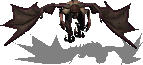
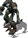
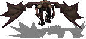
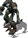


 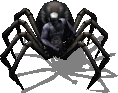
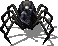


 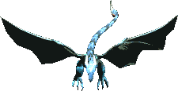
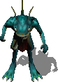
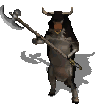
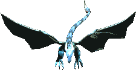
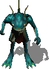
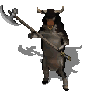


 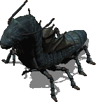
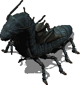


 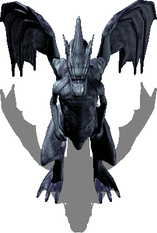
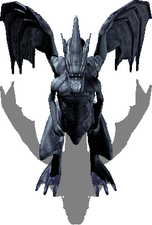


 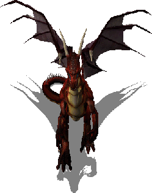
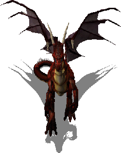


 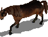
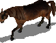


 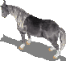
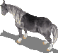
 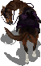
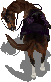
 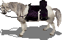
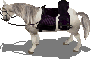
 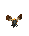
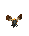


 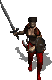
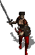


 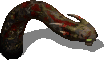
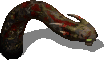
 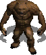
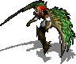
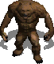
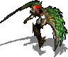

 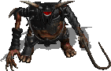
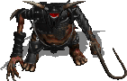


 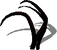
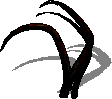


 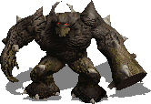
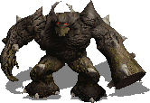

 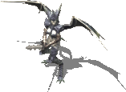
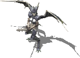


 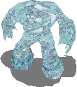
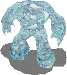


 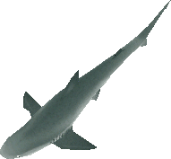
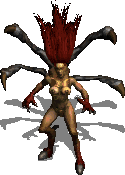
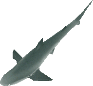
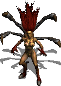